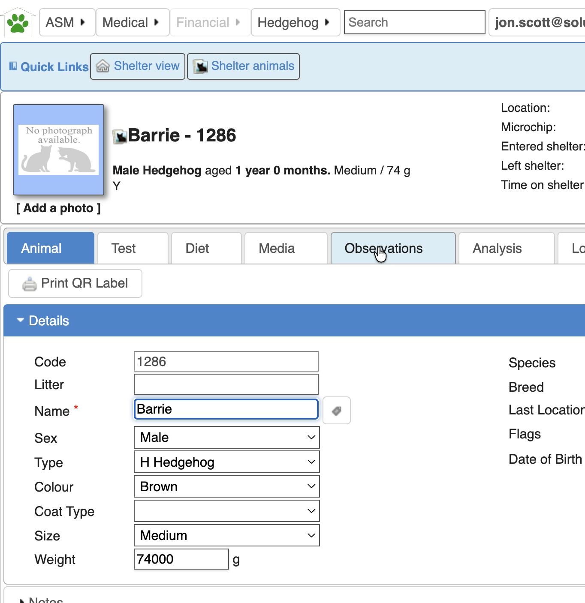
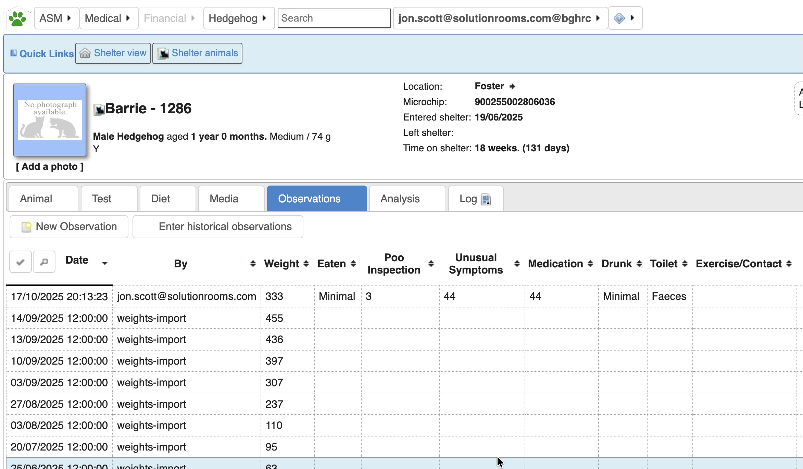
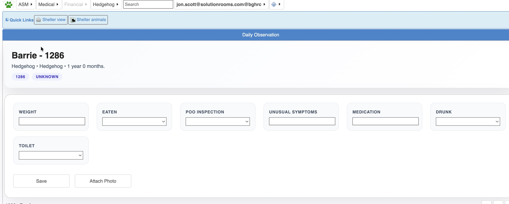
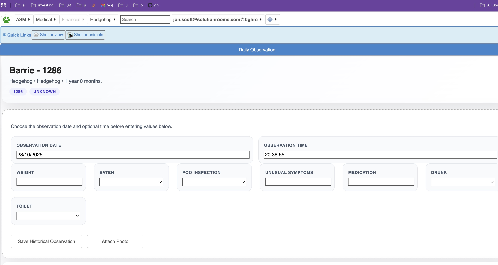
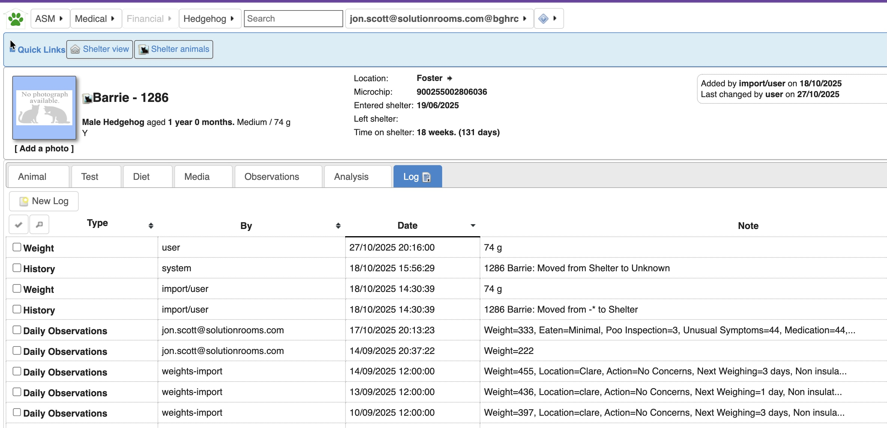
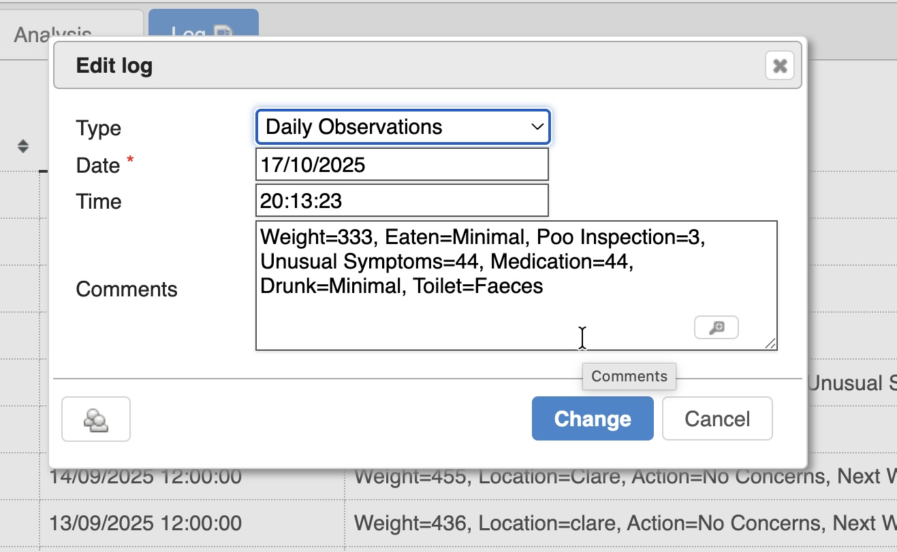
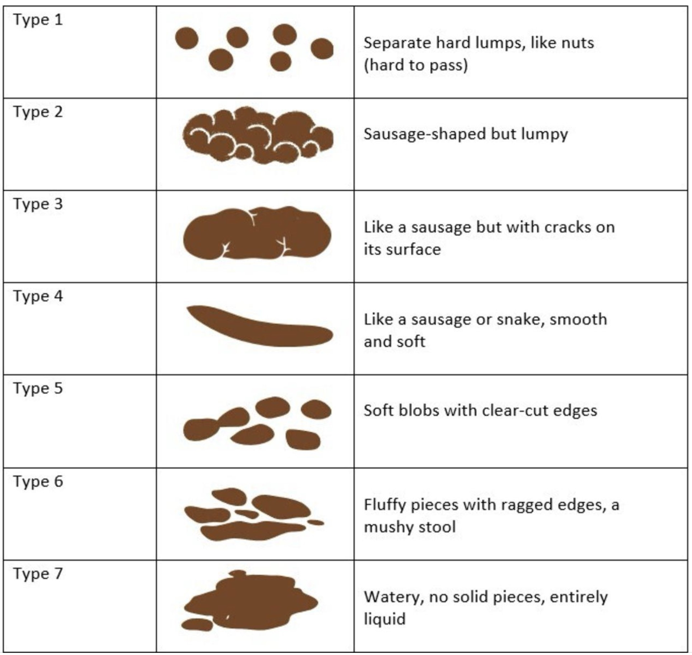
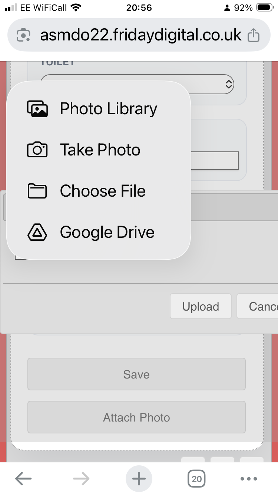

2. How to Enter Observations
Follow these steps to capture today’s weight and wellbeing notes quickly and accurately.
Open the animal profile
- From Shelter View, click the animal that you are updating.
- You will land on the full profile with tabs across the top for Animal, Test, Diet, Media, Observations and more.

Review existing observations
Select the Observations tab to see all previous entries. The table shows who logged the note, the recorded weight, feeding notes and other indicators.

Add today’s observation
- Click New Observation.
- A fresh daily observation form opens with weight, eaten, toilet and other key fields.
- Complete each field following the guidance in Section 4 – Field-Level Advice.
- Press Save to commit the entry. Use Attach Photo if you need to add supporting media.

Need to correct an earlier entry or record data for a past date? Continue to Section 3 – Advanced Options for editing and backfilling guidance.
3. Advanced — Adjusting or Backfilling Observations
Need to fix an error or add a missed day? Use the options below to keep the record accurate.
Update today’s observation
If you notice a typo immediately, reopen the New Observation screen. The current values are pre-filled — simply overtype the corrections and press Save.
Add a missed day
Need to enter data for yesterday or another past date?
- From the Observations tab click Enter historical observations.
- Select the correct date (and optional time) before filling out the fields.
- Enter the information as usual and choose Save Historical Observation.

Edit an older entry
Occasionally you may need to correct something in a historical observation. Use the Log tab to locate and edit the entry.
- Open the Log tab on the animal record.
- Locate the relevant Daily Observations row and click it.
- In the edit window, adjust the details and press Change to save.


Editing the log keeps a complete audit trail of who made the change and when. See Section 4 for help filling in each field consistently.
The photos you upload sit in the Media tab. If you need to replace or delete one, open that tab, make the change, and optionally set your favourite image as the profile photo.
4. Field-Level Advice
Use this checklist each time you complete an observation so we collect consistent, high-quality data.
- Weight: Enter today’s weight in grams only (numbers, no units). Example: type
443, not443g. Pair the reading with a photo (see below). - Eaten: Choose the dropdown option that best reflects how much was consumed.
- Poo Inspection: Select a number from 1 (hard pellets) to 7 (fully liquid). Use the chart below as a guide.

- Unusual symptoms: Describe anything that looks out of the ordinary — behaviour, breathing, injuries, etc. Leave blank if nothing to report.
- Medication: Record the name and dose of medication administered. If none, leave blank.
- Drunk: Use the dropdown to note how much water the animal has taken.
- Toilet: Indicate whether urine, faeces, or both were observed. Use the dropdown options provided.
- Photo: Attach an up-to-date photo. On mobile/tablet, tap Attach Photo and choose the quickest option (take a new photo or upload from your library). You can review, replace, or set a favourite image later from the Media tab.
